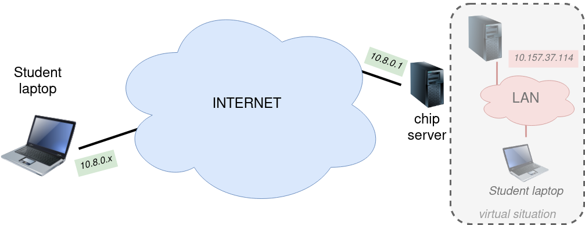
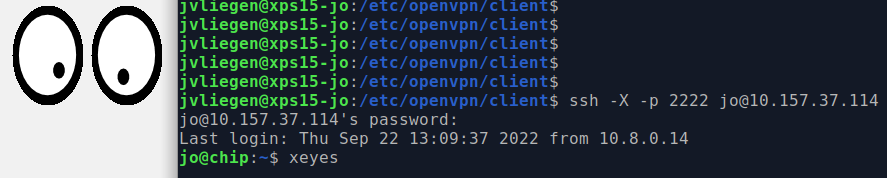

To be able to run the simulation in these labs, dedicated software is required. As SystemVerilog is not an everyday language for simulation (or verification to be more precise), we have to rely on the 3 EDA (electronic design automation) giants in industry:
Due to license constraints these labs will done in QuestaSim (previously known as ModelSim), by Mentor Graphics.
The design software is installed on a Virtual Machine, that is running on one of the ES&S servers. (As you should already know, Emerging technologies, Systems and Security (ES&S) is a research group within KU Leuven).
The networking setup is as shown in the image below.

Your laptop is connected to the Internet, as is the chip server on which the virtual machine is running. Through a Virtual Private Network (VPN), it could appear as if your laptop is connected to the chip server on a private network. When you are connected in the VPN, you can make a connection (through another virtual network) to the virtual server that runs the design software (which sits at 10.157.37.114). This connection is to be made through an ssh-connection.
Please note that the ssh-server on the virtual machine is listening on port 2222, in contrast to 22 (which is the default port).
Before you get out your Putty client (or any other client), it is important to understand that we will be relying on the GUI of QuestaSim. Therefore, we need to somehow get graphical interface to be displaying on your laptop.
Apart from a VNC connection, this can (on a Linux-system) also be achieved by using X11-forwarding. If you want to learn more about the X Window System (X11 or also called X), maybe you can start at the wikipedia-page.
In short, what you need to do is run a X11 server on your laptop. Through the ssh connection the actual “windows” can then be displayed on your own screen. The one trick that needs to be done is to add a -X argument to the ssh connection.
$ ssh -X -p 2222 loginname@10.157.37.114For the Windows users it is recommended to use MobaXterm. This tool both runs an X-server and allows ssh connections. Mac users can use XQuartz to run the X-server. The ssh connection (with the -X argument) you should make through Terminal.
To check if you setup/configuration is working, you could use xeyes. 
Like much (professional) software that is running on a Linux machine, a script has to be run before the software can be used. Typically these scripts set some environment variables for finding the software and/or load license server settings. Although this seems as something you want to do automatically, doing this step manually allows you to load only those things that you want. For example, you could have different versions of QuestaSim running. By selecting the correct script, you can choose which version you want to work with.
The script you have to run once, for every login you do (meaning, for each bash session that is launched). To run the script, can do:
$ source /opt/scripts/questasimFinally you can start QuestaSim, by using the command vsim.
$ vsimIn the appendices, some additional info on QuestaSim is available.